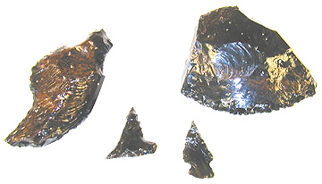

Materials produced by Chris Eichermueller
in Spring 2002. See additional results below.
Photos copyright Ruben G. Mendoza,
2002.
Project Results
The stone tools represented in this section of the Institute website
were crafted by CSU Monterey Bay students enrolled in Dr. Mendoza's SBS
224s/324s (Archaeology: From Map to Museum) course, and in related subsidiary
labs. Each of the tools in this instance was crafted from obsidian
or volcanic glass retrieved from California sources. Much of that
material represented to date in this section was obtained from gem and
mineral collectors who were kind enough to assist the Institute in obtaining
suitable samples for flintknapping.
Spring 2002 Results: These
results were obtained from obsidian glass by students working with materials
from Northeastern California. It should be noted that some 40 students
were involved in this flintknapping exercise, and as such, this represented
the largest collective flintknapping exercise ever undertaken at any one
time by the Institute's director. Materials are identified by student
name, and are ordered according to the quality of the workmanship represented.
Objective: The objective of the exercise was to produce at least one representative
example of a pressure flaked edge...and this irrespective of overall form.
Students were offered extra credit for the finest examples of pressure
flaked materials. The highest ranking example resulted in 10% points
of additional credit, and each of the following examples were provisioned
5% points of additional credit:
Jeff
Farless Alison Geitner
Paula Acojido Amanda
Miles Amy Gotshalk-Stine
Rachel Jost
Congratulations to all students who participated
in the flintknapping exercises this semester. While I was unable
to provide additional credit to all, I know that many of you worked diligently
to learn the difficult craft of flintknapping. For those who made
the effort, congratulations!